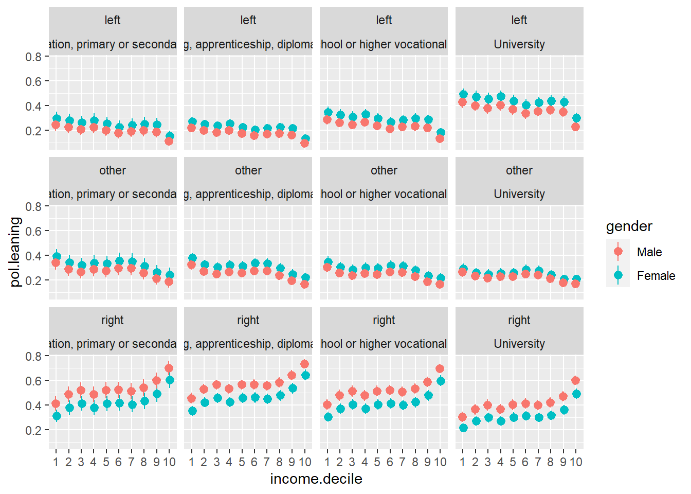
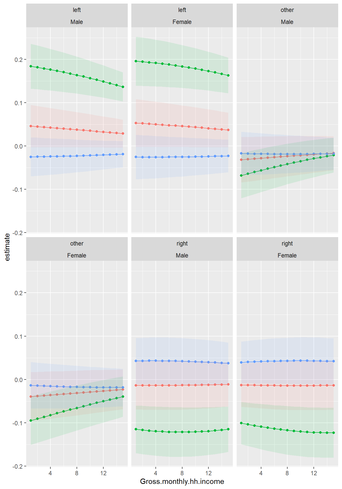
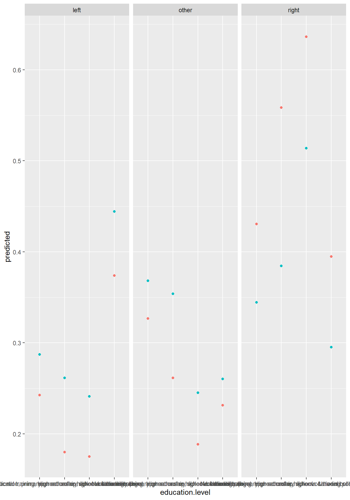
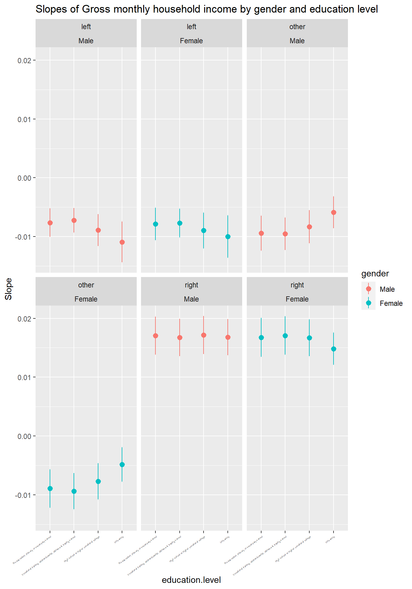
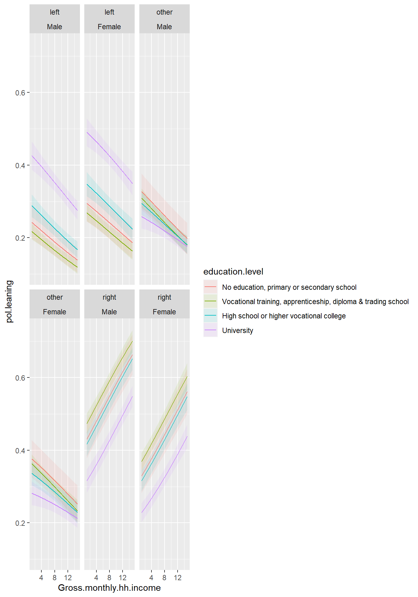
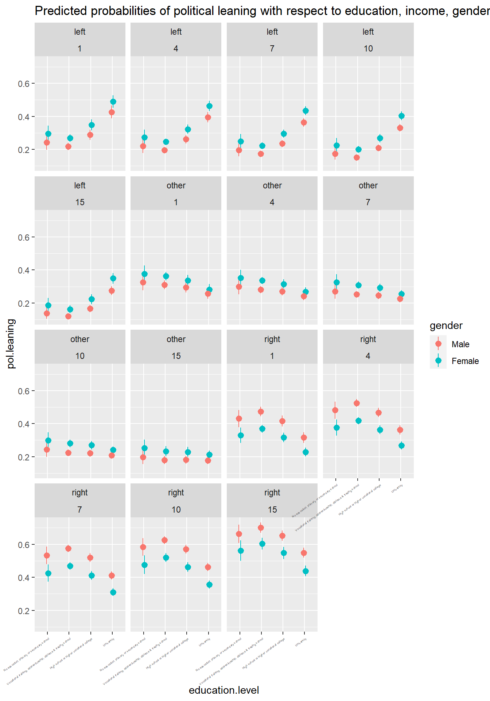
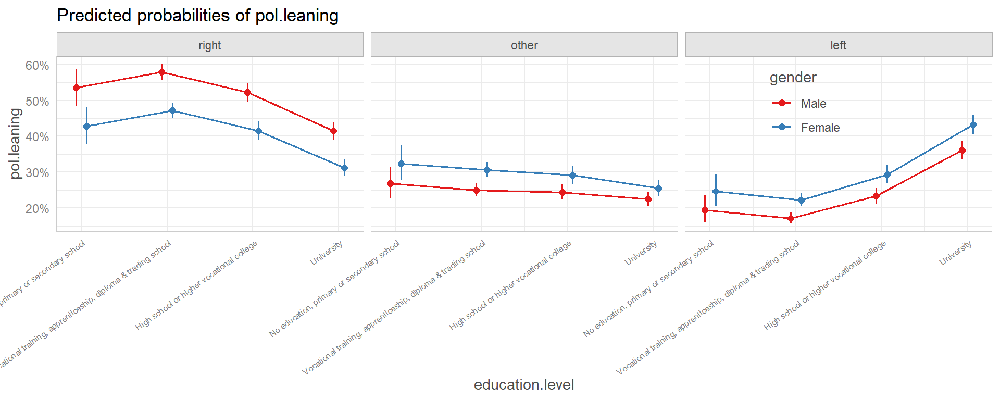

setwd("F://myblog/posts/Political cleavages in Switzerland")
knitr::convert_chunk_header("tp1-final-mqa-celal-guney.Rmd",
output = "index.qmd")Clivages politiques multidimensionels en Suisse: quels facteurs affectent le positionnement politique?
Introduction
Une tendance récente en économie politique a développé une analyse systématique et de long terme des transformations des clivages politiques au sein de quasiment tous les régimes démocratiques. Ce projet a donné lieu à de vastes analyses des préférences politiques en fonction de caractéristiques diverses comme le profil socioéconomique, le niveau d’éducation, le genre, l’ethnie ou encore la religion (Gethin, Martinez-Toledano, and Piketty 2021). L’augmentation tendancielle des inégalités au sein des démocratie occidentales depuis les années 1980, dont la Suisse (Morgan and Neef 2020) n’a pas été suivie par un renforcement ou un renouvellement du soutien pour la redistribution. Selon Piketty (2018), les évolutions récentes des clivages politiques ne consistent pas en un retour de conflits axés sur la classe sociale, mais sur un axe mutldimensionel combinant un axe “classiste” gauche-droite liée aux questions économiques et un axe “culturel” ressemblant fortement à l’axe centrée sur les valeurs “postmatérielles” de Inglehart (1971); (Inglehart and Norris 2017), à l’excpeption près que Piketty accorde davantage d’importance au niveau d’éducation comme source de l’axe et du conflit culturel. Le soutien électoral aux partis de gauche serait progressivement passé des classes populaires (bas revenu) aux personnes les plus diplomées tandis que le soutien aux partis de droite demeure un soutien de classe corrélé positivement au revenu et au patrimoine. Piketty identifie le résultat des transformations des clivages politiques en la formation de deux groupes sociaux distincts: le gauche brahmane rassemblant les plus éduqués, et la droite marchande rassemblant les plus hauts revenus et gros patrimoine. A ces deux groupes peuvent être opposées des alternatives soit “nativistes” soit sociales.
Amable and Darcillon (2021) proposent des résultats qui contrastent ceux de Piketty. En effet, les niveaux de revenu seraient toujours un facteur important dans la formation des préférences politiques sur un axe droit-gauche. Ils identifient notamment la possibilité d’alliance politique entre les plus éduqués et les haut revenus, donnant naissance à un “bloc bourgeois” tentant de se positionner au-delà du clivage droite-gauche et faisant potentiellement face à un bloc “nativiste”.
Dans ce contexte de transformation des clivages politiques, la Suisse représente un cas très particulier et intéressant à étudier. En effet, Durrer de la Sota, Gethin, and Martinez-Toledano (2021) avancent que la Suisse est le pays dans lequel la transformation du soutien envers la gauche, c’est-à-dire la domination graduelle des plus diplomés dans la base électorale de gauche, est la plus intense. Le champ politique suisse est aussi pionnier dans l’émergence de l’axe “culturel-postmatériel” ainsi que de l’intensification et la polarisation de ce dernier avec l’apparition précoce de ce qui est devenu l’un des partis politique populiste les plus prospères d’Europe, à savoir l’Union Démocratique du Centre (UDC) qui aurait rassemblé les électeurs les moins éduqués et à bas revenu. En outre, une autre particularité suisse serait la prévalence du clivage culturel-identitaire sur le clivage économique ou de classe comme conséquence des divisions religieuses et linguistiques qui ont structuré l’évolution de long terme du champ politique suisse (Durrer de la Sota, Gethin, and Martinez-Toledano 2021: 22).
Hypothèse, source et méthode
L’étude élaborée dans le cadre de ce travail pratique propose de tester la validité d’une partie de ces transformations en Suisse. Par conséquent, je vais m’intéresser aux facteurs influençant la position politique (gauche - droite - autre) en fonction du revenu et du niveau d’éducation. La littérature revue ci-dessus implique l’hypothèse testable suivante:
- Le soutien pour les partis politiques suisses de gauche dépend positivement du niveau d’éducation (surtout chez les hauts diplomés, que Piketty appelle la “gauche brahmane”) et négativement du niveau de revenu (les hauts revenus ayant tendance à plutôt soutenir les partis de droite, ce que Piketty nomme la “droite marchande”).
Il s’agit de cette hypothèse que je vais tester dans le cadre de ce travail pratique. Pour ce faire, je vais utiliser des données d’enquêtes post-électorales suisses issues du centre de compétences suisse en sciences sociales (FORS). En particulier, je mobilise le jeu de données “Swiss Election Study (Selects) 2019” (Ref. 13846) disponible sur leur base de données. Il s’agit d’un jeu de données de panel regoupant 6 vagues d’entretien de 2019 à 2022 posant diverses questions sur des sujets politiques, sociaux et économiques. J’utilise, dans le cadre de cette étude, uniquement les données de la première vague car c’est elle qui compte le plus d’observation avec un échantillon de 7’939 Suisses.
Cette enquête met à disposition certaines variables d’intérêts pour l’étude conduite ici:
J’utilise comme variable dépendante le positionnement politique. L’enquête de la vague 1 a récolté le vote pour les élections au Conseil National de 2015: la variable “f10300s”. Je crée une nouvelle variable à partir de cette dernière afin de seulement avoir trois catégories: vote pour un parti de droite (“right”); abstention, vote blanc, invalide ou parti ne pouvant ni être classé à droit ou à gauche (“other”) et vote pour les parti de gauche (“left”). Je tiens bien à inclure la catégorie “other”, car j’estime que l’abstention plutôt est négligée dans la littérature revue ci-dessus.
Variable indépendant 1: le niveau de revenu. L’enquête a récolté le niveau de revenu par quinze tranches/groupes et la variable prend donc des valeurs discrète de 1 à 15. J’ai du faire un choix entre laisser la variable telle qu’elle est (numérique de 1 à 15) ou bien la factoriser. La première option a été choisie afin de garder le modèle aussi simple que possible, car une factorisation aurait donné lieu à beaucoup de coefficients.
Variable indépendante 2: le niveau d’éducation. La variable a 14 modalités couvrant les différents niveau de formation en Suisse (le minimum étant aucune formation: 1 et le maximum étant la formation univeristaire 13 (14 étant “autre”). Je recode la variable en quatre catégories (voir l’annexe et les statistiques descriptives)).
Partie 1: modèle linéaire généralisé
Etant donnée que la variable dépendante est une variable qualitative multinomiale prenant 3 catégories, le modèle de régression utilisé pour estimer le modèle pour la première partie du travail pratique est la régression logistique multinomiale. Le vote pour la droite est choisi comme référence de base, le modèle peut être résumé en deux equations:
\[ log[\frac{p(y = gauche)}{p(y = droite)}] = \beta_{1}Revenu + \beta_{2j}Education_j + \beta_3Genre + \epsilon \]
\[ log[\frac{p(y = autre)}{p(y = droite)}] = \beta_{1}Revenu + \beta_{2j}Education_j + \beta_3Genre + u \]
Y représente le vote pour la droite, la gauche ou autre. La variable revenu a 15 modalités et education 4 (j). J’inclus dans le modèle une variable binaire contrôlant pour le genre. Le modèle pourrait inclure davantage de variables contrôle comme la taille du ménage ou encore la région que je n’inclus pas afin de garder un modèle aussi simple que possible dans le cadre du travail pratique. Le modèle n’inclut pas d’intercept afin de ne pas forcer de catégorie de référence pour les modalités d’éducation.

Voici les résultats du modèle estimé sous la forme d’une table:
% Table created by stargazer v.5.2.3 by Marek Hlavac, Social Policy Institute. E-mail: marek.hlavac at gmail.com
% Date and time: dim., avr. 02, 2023 - 13:27:40
\begin{table}[!htbp] \centering
\caption{}
\label{}
\begin{tabular}{@{\extracolsep{5pt}}lcc}
\\[-1.8ex]\hline
\hline \\[-1.8ex]
& \multicolumn{2}{c}{\textit{Dependent variable:}} \\
\cline{2-3}
\\[-1.8ex] & other & left \\
\\[-1.8ex] & (1) & (2)\\
\hline \\[-1.8ex]
income.decile2 & $-$0.328$^{***}$ & $-$0.253$^{*}$ \\
& (0.127) & (0.132) \\
& & \\
income.decile3 & $-$0.476$^{***}$ & $-$0.394$^{***}$ \\
& (0.128) & (0.133) \\
& & \\
income.decile4 & $-$0.344$^{***}$ & $-$0.249$^{*}$ \\
& (0.129) & (0.132) \\
& & \\
income.decile5 & $-$0.443$^{***}$ & $-$0.433$^{***}$ \\
& (0.129) & (0.134) \\
& & \\
income.decile6 & $-$0.384$^{***}$ & $-$0.554$^{***}$ \\
& (0.128) & (0.135) \\
& & \\
income.decile7 & $-$0.364$^{***}$ & $-$0.460$^{***}$ \\
& (0.129) & (0.135) \\
& & \\
income.decile8 & $-$0.546$^{***}$ & $-$0.482$^{***}$ \\
& (0.133) & (0.133) \\
& & \\
income.decile9 & $-$0.842$^{***}$ & $-$0.638$^{***}$ \\
& (0.137) & (0.133) \\
& & \\
income.decile10 & $-$1.134$^{***}$ & $-$1.303$^{***}$ \\
& (0.140) & (0.141) \\
& & \\
education.levelVocational training, apprenticeship, diploma & trading school & $-$0.154 & $-$0.209 \\
& (0.128) & (0.139) \\
& & \\
education.levelHigh school or higher vocational college & $-$0.098 & 0.184 \\
& (0.136) & (0.145) \\
& & \\
education.levelUniversity & 0.061 & 0.869$^{***}$ \\
& (0.138) & (0.145) \\
& & \\
genderFemale & 0.413$^{***}$ & 0.462$^{***}$ \\
& (0.059) & (0.059) \\
& & \\
Constant & $-$0.193 & $-$0.530$^{***}$ \\
& (0.141) & (0.152) \\
& & \\
\hline \\[-1.8ex]
Akaike Inf. Crit. & 15,033.630 & 15,033.630 \\
\hline
\hline \\[-1.8ex]
\textit{Note:} & \multicolumn{2}{r}{$^{*}$p$<$0.1; $^{**}$p$<$0.05; $^{***}$p$<$0.01} \\
\end{tabular}
\end{table} La quasi majorité des coefficients sont significatifs à l’exception de “Univeristy” et “no education…” pour le choix “other”. Quant aux signes et à la magnitude des coefficient, les log odds sont plutôt difficiles à interpréter, je présente donc directement les odds ratio dans un graphique ci-dessous. Cependant, il est tout de même possible de constater que la variable pour le revenu (Gross.monthly.hh.income) a le signe attendu (-), est significatif, mais est très proche de 0 (-0.07), ce qui indique un lien très faible avec notre variable dépendante.
Afin de représenter visuellement les coefficients estimés, voici une représentation graphique des odds ratios obtenus. Je ne choisis pas une représentation graphique avec la courbe estimée tel que conseillé dans le cadre du cours, car il y aurait de multiples graphiques qui seraient trop submergé d’information (surtout pour un plot avec le vote droite-gauche, droite-autre en fonction du niveau d’éducation), tandis qu’un odd ratio plot résume en une seule visualisation les effets estimé du modèle. Un graphique représentant les odds ratio peut se révéler très intéressant, car il est possible d’y voir directement et visuellement l’effet des variables indépendante sur la variable dépendante. Si l’odd ratio est supérieur à 1, la variable explicative (ou son niveau) a un effet positif et inversement si inférieur à 1:


Plusieurs observations peut être faites avec ce graphique. Premièrement, les chances de voter à gauche ou autre par rapport à voter à droite diminuent avec le niveau de revenu (ceteris paribus). Les plus hauts diplomés sont la seule catégorie de niveau d’éducation qui ont davantage de chance de voter à gauche, toutes les autres catégories ont plus de chance de voter à droite (toutes choses égales par ailleurs). On peut donc conclure que l’hypothèse est validée: les chances de voter à gauche augmentent chez les plus hauts diplomés (surtout au niveau universitaire) et diminuent avec le niveau de revenu. Enfin, les femmes ont davantage de chance, tous les autres facteurs considérés fixes, de voter à gauche (ou choisir autre: abstention, vote blanc etc) par rapport aux hommes.
Afin d’anaylser plus en détails les effets sur l’inclinaison politique, voici un graphique sur les effet marginaux/prédits qui complémente bien le graphique des odds ratio:

`geom_line()`: Each group consists of only one observation.
ℹ Do you need to adjust the group aesthetic?
`geom_line()`: Each group consists of only one observation.
ℹ Do you need to adjust the group aesthetic?
`geom_line()`: Each group consists of only one observation.
ℹ Do you need to adjust the group aesthetic?





La probabilité de voter à droite augmente avec le niveau de revenu pour tous les niveaux d’éducation, la probabilité de voter à gauche ou autre diminue avec le niveau de revenu pour tous les niveaux d’éducation. Pour chaque niveau de revenu, les hauts diplomés (université) ont une probabilité prédite plus faible de voter à droite ainsi qu’une probabilité plus grande de voter à gauche. La probabilité de voter à droite augmente donc avec le revenu pour tous les niveau d’éducation avec néanmoins un écart important pour les hauts diplomés pour qui la probabilité de voter à droite est inférieure aux autres niveaux d’éducation pour tous les niveaux de revenu. Ce graphique valide l’hypothèse d’un effet positif du niveau de revenu sur la probabilité de voter à droite. Ce qui est nouveau par rapport à l’hypothèse est que la probabilité de voter à gauche chez les plus éduqués est liée négativement avec le niveau de revenu: les plus éduqués ne votent donc pas de façon homogène pour la gauche car leur probabilité de voter à gauche diminue avec le revenu.
Afin de verifier la deuxième partie de l’hypothèse, à savoir l’effet positif du niveau d’éducation sur la probabilité de voter à gauche, je présente (figure 3) les graphiques marginaux de valeurs prédites pour le niveau d’éducation.

Les probabilités prédites en fonction du niveau d’éducation confirment la deuxième partie de l’hypothèse: on peut voir notamment (figure 3) que la probabilité de voter à gauche augmente avec le niveau d’éducation (graphique de droite). De plus, les femmes votent en probabilité plus pour la gauche ou autre que les hommes pour chaque niveau d’éducation.
D’autres graphiques d’effets marginaux/probabilités prédites sont disponibles dans l’appendix.
Partie 2: Modèle linéaire classique
Pour estimer le modèle linéaire classique, je recode la variable pol.leaning pour la transformer en variable numérique: 0 si “autre”, 1 si “gauche” et 2 pour “droite”.
Variables | Estimates1 | SE2 | p-value |
|---|---|---|---|
Gross.monthly.hh.income | 0.02*** | 0.003 | <0.001 |
education.level | |||
No education, primary or secondary school | 1.1*** | 0.045 | <0.001 |
Vocational training, apprenticeship, diploma & trading school | 1.1*** | 0.025 | <0.001 |
High school or higher vocational college | 1.1*** | 0.030 | <0.001 |
University | 1.0*** | 0.032 | <0.001 |
gender | -0.15*** | 0.020 | <0.001 |
R² | 0.682 | ||
Adjusted R² | 0.682 | ||
No. Obs. | 7,254 | ||
1*p<0.05; **p<0.01; ***p<0.001 | |||
2SE = Standard Error | |||
Régression linéaire
En ce qui concerne le niveau de revenu, les résultats sont plutôt en accord avec le modèle multinomial: la probabilité de voter à droite augmente avec le revenu, mais ce lien est très faible car le coefficient est extrêmement proche de zéro. Tous les coefficients sont significatifs, mais ils sont néanmoins très peu inteprétables. En outre, les coefficients de ce modèle sont assez dure à interpéter à cause de la nature multinomiale de la variable dépendante sur trois catégories. Par exemple, le coefficient négatif de -0.15 pour “gender” (0 si homme, 1 si femme) implique que, ceteris paribus, les femmes s’abstiennent davantage, votent davantage blanc ou pour des partis hors droit-gauche qu’elles votent pour des partis de droit ou de gauche. Toutefois, quel est l’importance relative du non-vote des femmes pour la droite ou la gauche qui fait que le coefficient a une valeur négative?. Comme on l’a vu ci-dessus avec les odds ratios, les femmes ont plus de chance de voter à gauche , choisir “autre” (other) plutôt qu’à droite et c’est cela qui rend ce coefficient négatif, mais cela n’est pas visible ici dans ce modèle. La variable dépendante est ordonnée numériquement de 0 à 2 alors que cela ne fait pas sens.
Une variable dépendante binomiale, par exemple pour laquelle j’enlèverais la catégorie “autre”, ferait davantage sens (mais dans ce cas le modèle approprié reste la régression logit ou probit binomiale). Une autre possibilité serait de laisser inchangées les catégories initiales du panel (les partis politiques pour l’élection au Conseil National de 2015, la variable devrait toutefois être recodées afin de classer les parti dans une échelle ascendante droite-gauche ou inversement), car comme Gelman and Hill (2007) expliquent, la régression linéaire classique peut faire sens si la variable dépendante, même catégorielle ou nominale, a un nombre assez grand de catégories.
Conclusion
L’étude conduite dans le cadre de ce travail pratique a tenté de tester l’hypothèse suivante: la probabilité de voter pour la gauche dépend positivement du niveau d’éducation et négativement du niveau de revenu. Nous avons vu que cette hypothèse est grande partie vérifiée: les plus éduqués ont davantage de probabilité de voter à gauche, mais cette probabilité diminue avec le niveau de revenu. Pour chaque niveau de revenu, les plus éduqués ont un niveau de probabilité plus faible de voter à droite. Le lien entre revenu et vote pour la gauche ou la droite est cependant très faible si l’on considère l’odd ratio qui est très proche de l’unité.
Appendix
Statistiques descriptives
| pol.leaning | n | perc |
|---|---|---|
| right | 3664 | 0.4615191 |
| other | 2193 | 0.2762313 |
| left | 2082 | 0.2622497 |
Statistiques descriptives
| education.level | n | perc |
|---|---|---|
| No education, primary or secondary school | 420 | 0.0529034 |
| Vocational training, apprenticeship, diploma & trading school | 3067 | 0.3863207 |
| High school or higher vocational college | 1880 | 0.2368056 |
| University | 2182 | 0.2748457 |
| NA | 390 | 0.0491246 |
Statistiques descriptives
| Gross.monthly.hh.income | n | perc |
|---|---|---|
| 1 | 542 | 0.0682706 |
| 2 | 444 | 0.0559264 |
| 3 | 499 | 0.0628543 |
| 4 | 730 | 0.0919511 |
| 5 | 810 | 0.1020280 |
| 6 | 723 | 0.0910694 |
| 7 | 706 | 0.0889281 |
| 8 | 584 | 0.0735609 |
| 9 | 482 | 0.0607129 |
| 10 | 421 | 0.0530293 |
| 11 | 361 | 0.0454717 |
| 12 | 296 | 0.0372843 |
| 13 | 222 | 0.0279632 |
| 14 | 185 | 0.0233027 |
| 15 | 601 | 0.0757022 |
| NA | 333 | 0.0419448 |
Statistiques descriptives

Graphiques marginaux/probabilités prédites

Références
Amable, Bruno, and Thibault Darcillon. 2021. “The Brahmin Left, the Merchant Right and the Bloc Bourgeois.” Review of International Political Economy. https://doi.org/https://doi.org/10.1080/09692290.2021.1913440.
Durrer de la Sota, Carmen, Armory Gethin, and Clara Martinez-Toledano. 2021. “Party System Transformation and the Structure of Political Cleavages in Austria, Belgium, the Netherlands and Switzerland, 1967-2019.” World Inequality Lab – Working Paper, no. 2021.
Gelman, Andrew, and Jennifer Hill. 2007. Data Analysis Using Regression and Multilevel/Hierarchical Models. Cambridge University Press.
Gethin, Armory, Clara Martinez-Toledano, and Thomas Piketty. 2021. “Brahmin Left Versus Merchant Right: Changing Political Cleavages in 21 Western Democracies, 1948-2020.” World Inequality Lab – Working Paper, no. 2021.
Inglehart, Ronald. 1971. “The Silent Revolution in Europe: Intergenerational Change in Post-Industrial Societies.” The American Political Science Review 65 (4): 991–1017. https://www.jstor.org/stable/1953494.
Inglehart, Ronald, and Pippa Norris. 2017. “Trump and the Populist Authoritarian Parties: The Silent Revolution in Reverse.” Perspective on Politics 15 (2): 443–54. https://doi.org/https://doi.org/10.1017/S1537592717000111.
Morgan, Marc, and Theresa Neef. 2020. “What’s New about Income Inequality in Europe (1980-2019)?” World Inequality Lab - Issue Brie, no. 2020.
Piketty, Thomas. 2018. “Brahmin Left Vs Merchant Right: Rising Inequality & the Changing Structure of Political Conflict (Evidence from France, Britain and the US, 1948-2017).” World Inequality Lab – Working Paper, no. 2018.